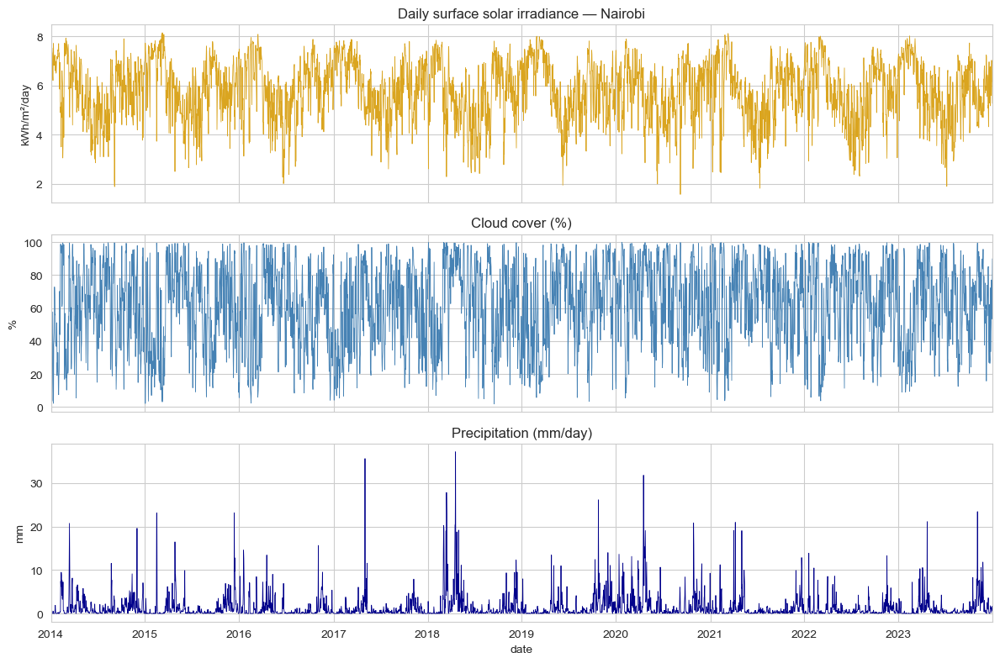
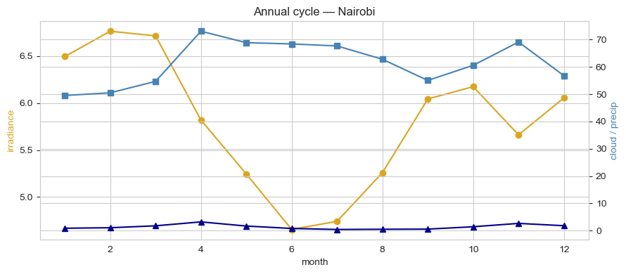
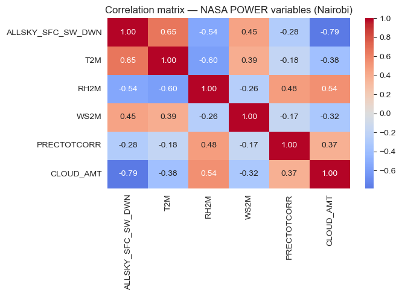
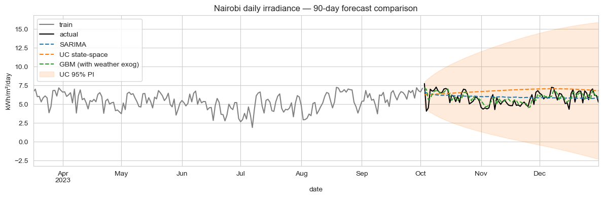

Summary
A gradient-boosted regressor that uses lagged irradiance + same-day weather covariates (cloud cover, humidity, precipitation, temperature, wind) forecasts daily Nairobi irradiance with 9.4% MAPE across a 90-day horizon — versus SARIMA at 13.8% and a UC state-space at 21.6%. Two findings worth keeping: monthly climatology hits 12.3% MAPE (better than SARIMA) — the seasonal envelope alone explains most of the predictability. And both SARIMA and UC deliver 99% empirical PI coverage — for a battery-sizing or grid-balancing decision, the calibrated interval is what actually drives sizing, not the GBM's tighter mean.
Why this matters
Kenya runs one of the largest pay-as-you-go solar markets in Africa — millions of household systems with sub-day battery capacity. The forecast question repeats every evening: charge the battery hard tonight, or assume tomorrow's sun will be enough? Same question at the utility level for grid integrators balancing solar against thermal and hydro. A 1-day-ahead irradiance error of 5% can flip whether a battery should be filled tonight or held in reserve. At 90-day horizons the question shifts to budgeting and storage-contract negotiation, but the metric vocabulary is the same.
The business question
Three operational consumers sit on the same forecast:
- Pay-as-you-go solar operators — battery-state-of-charge planning per household per night. Wants tight point forecasts at 1–7 day horizons.
- Utility-scale solar developers — generation expectations across 30+ day horizons; loss/over-supply decisions feed dispatch.
- Grid integrators & treasury — quantified worst-case scenarios for budgeting and risk-sharing contracts. Wants honest interval calibration.
Three customers, same forecast, three different things they look at. The case study compares a SARIMA baseline, a structural state-space model, and an ML challenger to see which fits which need.
Data
NASA POWER API — free, programmatic, no auth required. 10 years (2014-01-01 → 2023-12-31) of daily values for Nairobi (lat -1.2921, lon 36.8219):
ALLSKY_SFC_SW_DWN— surface shortwave irradiance (kWh/m²/day) — the forecast targetT2M— temperature at 2 mRH2M— relative humidity at 2 mWS2M— wind speed at 2 mPRECTOTCORR— corrected precipitationCLOUD_AMT— cloud cover %
Last 90 days held out as the test window; everything before that is training. NASA POWER's free-tier is generous and the API endpoint is one URL — same pipeline switches to Lagos, Cape Town, Cairo, or Dakar by changing two numbers in download_data.py.
EDA
Three regularities dominate Nairobi's irradiance series, and they're physical not statistical: twice-yearly low in March–May and October–December (the "long rains" and "short rains"), twice-yearly high in January–February and July–September, and a cloud-cover anti-correlation at the daily level that's the whole story for short-horizon variance.



Modelling approach
Three primary candidates plus three baselines, all forecasting daily ALLSKY_SFC_SW_DWN 90 days ahead.
1. SARIMA
SARIMAX(2,0,2)(1,0,1)7 — non-stationary AR/MA + weekly seasonal AR/MA. Note the order: irradiance is stationary in mean (cloud cycles oscillate around a fixed climatology), so no integration term. The weekly seasonal component is mostly absorbing measurement noise — solar isn't really a "weekly cycle" phenomenon at this latitude, but day-of-week sometimes correlates with measurement smoothing.
2. State-space — UnobservedComponents + annual Fourier exog
UnobservedComponents with local-linear-trend and four pairs of annual Fourier harmonics passed as exogenous regressors. The Fourier order of 4 is chosen because Nairobi's bimodal annual pattern needs more flexibility than a single sinusoid.
3. ML challenger — GBM with weather covariates
GradientBoostingRegressor(n_estimators=400, max_depth=3, learning_rate=0.05) on engineered features:
- Calendar:
dow,month,doy_sin,doy_cos - Lagged irradiance: 1, 2, 7, 14, 30 days
- Rolling means (shift-1): 7-day and 30-day
- Weather exogenous variables:
T2M,RH2M,WS2M,PRECTOTCORR,CLOUD_AMT— each at lag-1 and 7-day rolling mean
The cloud and humidity covariates are the lever. SARIMA and UC work only on lagged irradiance; GBM also gets yesterday's cloud cover and precipitation. The MAPE gap is mostly attributable to that information advantage.
Baselines
Three reference points: naive-last (predict tomorrow = today), naive-seasonal (predict tomorrow = irradiance one year ago), and monthly climatology (predict tomorrow = average irradiance for that calendar month, computed from the training window).
Results
90-day held-out test:
| Model | MAPE | RMSE (kWh/m²/day) | 95% PI coverage |
|---|---|---|---|
| GBM (weather exog) | 9.42% | 0.68 | — |
| Monthly climatology | 12.32% | 0.79 | — |
| SARIMA(2,0,2)(1,0,1)7 | 13.78% | 0.88 | 99% |
| Naive-seasonal (365-day lag) | 16.49% | 1.13 | — |
| UC + Fourier annual exog | 21.63% | 1.34 | 99% |
| Naive-last | 25.38% | 1.56 | — |

Trade-offs
- The GBM's gain depends on having weather data at prediction time. If the forecast is run for a date 7+ days out, you're feeding it forecast-of-forecast values for cloud/humidity, which are themselves uncertain. Production deployment needs to either (a) cap the horizon at the weather-forecast confidence horizon, or (b) chain a weather forecast model. Climatology has neither problem and is the right fallback.
- SARIMA and UC's PI coverage is the operationally useful number. 99% coverage at 95% nominal means the intervals are slightly wide — but for a battery-sizing decision, "wider but honest" is the right bias. Over-narrow intervals would be worse.
- UC underperforms on point forecast despite being structurally appropriate. The Fourier-order-4 might be overfitting to the training window's specific bimodal shape; a simpler order-2 with more noise tolerance might generalise better. Worth iterating in production.
- "Monthly climatology beats SARIMA" is a useful sanity check. It says the AR/MA structure is barely doing anything for this series. Production deployments should monitor whether SARIMA actually beats climatology on the rolling cohort — if not, ship climatology and save the compute.
Deployment sketch
For pay-as-you-go solar operators and grid integrators:
- Service: FastAPI
GET /forecast?lat=...&lon=...&horizon=30dreturning daily irradiance + 95% PI for any African coordinate. Same pipeline applies — the lat/lon parameter is the only dimension that varies. - Multi-city: NASA POWER serves the same data shape for any point on Earth; the same model artifacts work for Lagos, Cape Town, Cairo, Dakar with no code change.
- Refresh: daily cron pulls overnight NASA POWER updates; weekly retrain on the trailing 5 years; alert if rolling 30-day MAPE drifts past 12% (climatology floor).
- Dashboard: Streamlit page for solar developers showing forecast band, battery-state-of-charge simulator, and generation-impact estimator; for treasury, the same data with quantile-based scenarios.
Lessons
- Climatology is a real baseline; check it. A SARIMA that doesn't beat monthly climatology is a SARIMA that's overcomplicating the problem. The best forecast is sometimes the average of the calendar month, dressed up with a calibrated interval.
- Same-day weather covariates are the differentiator. The 4-percentage-point MAPE gain over climatology comes entirely from cloud-cover and humidity inputs. If your production system can't observe these in near-real-time, the structural model is your honest ceiling.
- NASA POWER plus a thirty-line download script is enough infrastructure for a city-level forecast service. No paid weather data, no licensing, no rate-limit anxieties. The pipeline trivially extends to any African city. The bottleneck is what you do with the forecast, not where the inputs come from.